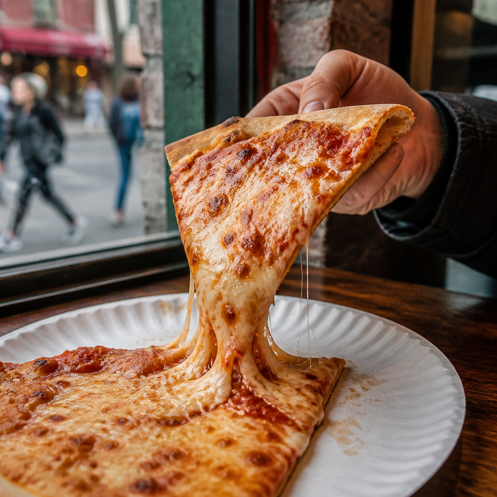

A pocket guide for first wanderings
New Yorkin yourpocket.
Five boroughs.A little loud, a lot lovely. Start anywhere, look up often, and leave room for one more slice.

74° 00′ 21.6″ W
Quick facts 01 / 03
A few things
to know.
Big place. Big heart. Here’s the short version before you hit the sidewalk.
- We call it The Big Apple.
- About 8.6 million people call New York City home, based on the July 2025 estimate.
- New York State was admitted to the Union in 1788.
City Hall, these days: Mayor Zohran Mamdani
A local favorite 02 / 03
One slice,
then another.
NYC pizza comes by the slice: thin, wide, and sturdy enough to fold in half for the sidewalk. Go for a classic cheese, grab extra napkins, and don’t overthink the best slice. The one in your hand is doing just fine.
Best enjoyed standing at the counterLook up. Then look closer A small surprise
The city has
a softer side.
Between the avenues, there are leafy paths and little flashes of blue. New York’s state bird is the eastern bluebird. Tap it for a tiny takeoff.
A small hello from the parkMake it yours 03 / 03
Things I
like.
Save the little discoveries from your day. This list lives only while this page is open.
Your page, your pace. Add the first thing you love.